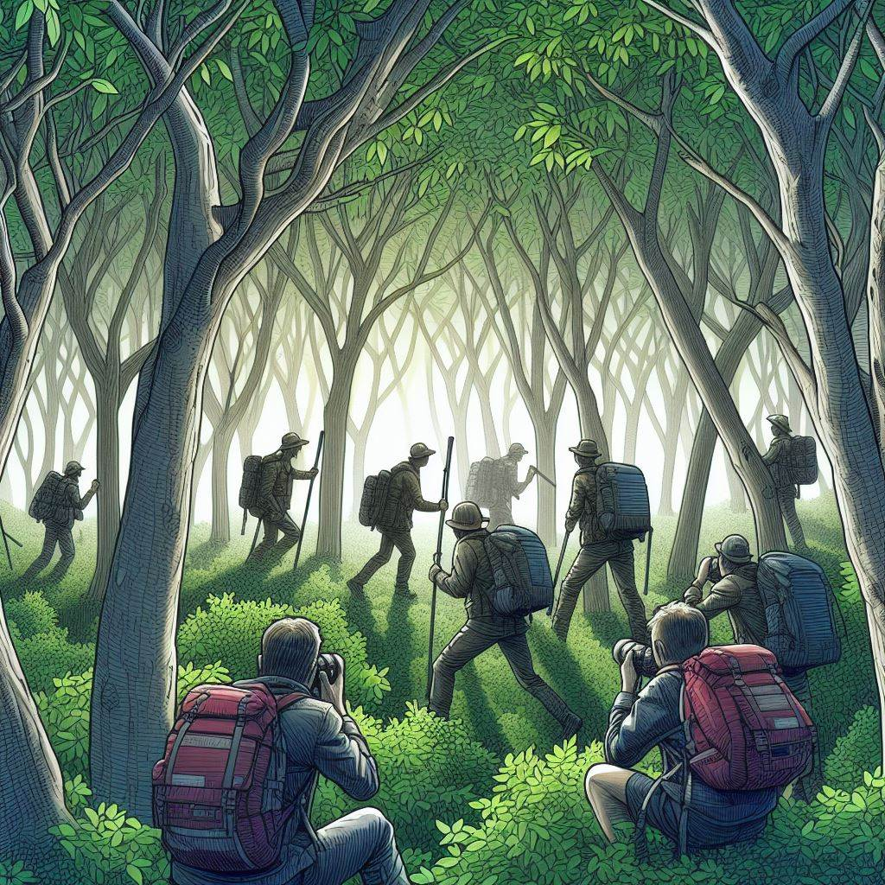

ACTIVIDADES
Taller de Arte y Creatividad
Este taller está diseñado para fomentar la creatividad y la expresión artística entre los niños y jóvenes de comunidades desfavorecidas. Durante el taller, los participantes aprenderán técnicas básicas de arte y explorarán diversas formas de expresión creativa, desde la pintura hasta la escultura con materiales reciclados.
Fecha y Horario: Todos los sábados de 10:00 a.m. a 12:00 p.m.
Lugar: Centro Comunitario EducaFuturo, ubicado en Pl. d'Urquinaona, 10.
Requisitos de Inscripción: Abierto a niños y jóvenes de 6 a 16 años. No se requiere experiencia previa. La inscripción es gratuita y se realiza en persona en el Centro Comunitario EducaFuturo.
Más Información: Para obtener más información, comuníquese con nosotros al info@educafuturo.com o llame al 933 02 02 24.
Excursión Educativa a la Naturaleza
Únete a nosotros en una emocionante excursión educativa a la naturaleza, donde los participantes tendrán la oportunidad de explorar el entorno natural, aprender sobre la biodiversidad y comprender la importancia de la conservación del medio ambiente.
Fecha y Lugar: Próxima excursión el sábado 15 de marzo en el Centro Comunitario EducaFuturo, a las 8:00 a.m.
Destino: Parque natural del Garraf
Actividades: Observación de aves, caminatas guiadas, talleres sobre conservación ambiental.
Requisitos de Inscripción: Los cupos son limitados. Los interesados deben inscribirse en el Centro Comunitario EducaFuturo antes del 10 de marzo.
Club de Lectura Juvenil
Únete a nuestro club de lectura juvenil y descubre el placer de la lectura mientras exploramos historias inspiradoras y debatimos temas relevantes para nuestra comunidad.
Fecha y Horario: Nos reunimos todos los jueves de 4:00 p.m. a 6:00 p.m en el Centro Comunitario EducaFuturo, ubicado en Pl. d'Urquinaona, 10.
Próximo Libro: "El Principito" de Antoine de Saint-Exupéry.
La participación es gratuita. Los interesados pueden inscribirse en la Biblioteca Comunitaria EducaFuturo.
Actividades: Discusión del libro, actividades de comprensión lectora, intercambio de ideas y opiniones.